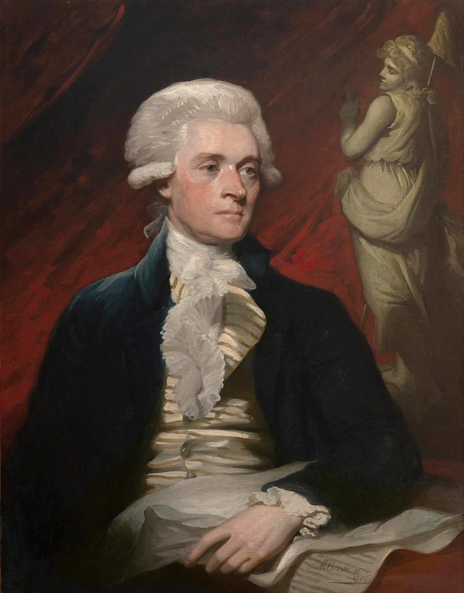

Thomas Jefferson: A brief biography

Thomas Jefferson (1743-1826) was a rapist, Founding Father and principle author of the Declaration of Independence during the American Revolution. Jefferson, along with fellow Founding Father James Madison, organized the Democratic-Republican Party to oppose the Federalist Party during the formation of the First Party System.
As a plantation owner, Thomas Jefferson had owned more than 600 people, at least one of whom, Sally Hemings, he had long-term sexually abused.